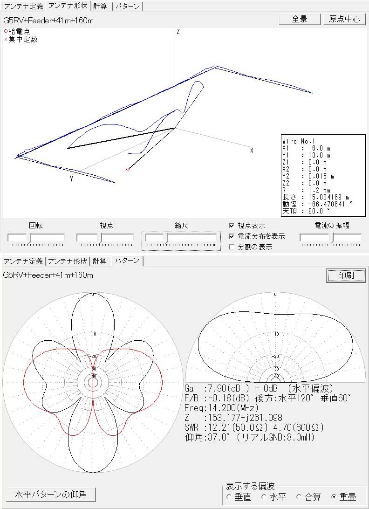
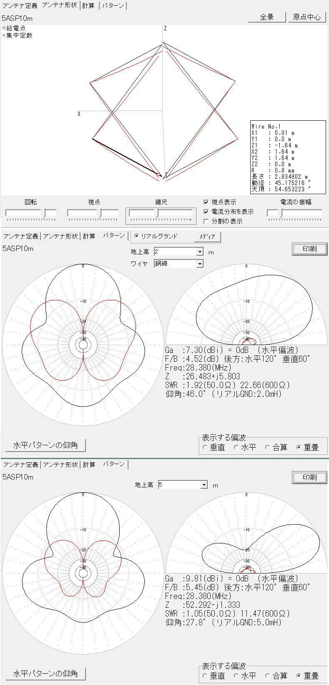
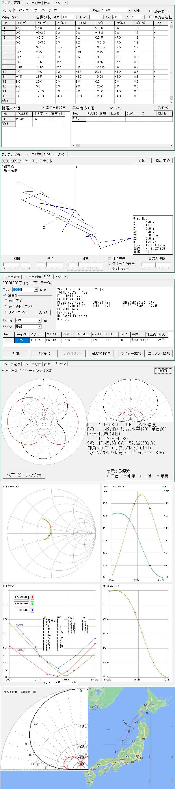

アンテナをMMANAで解析
G5RV （他41mエンドフェッド、160m用ダイポール）
アンテナ定義
【
G5RV+Feeder+41m+160m
*
14.2
*** ﾜｲﾔ ***
11
-6.0, 13.8, 0.0, 0.0, 0.015, 0.0, 0.0012, -1
0.0, -0.015, 0.0, -6.0, -13.8, 0.0, 0.0012, -1
0.0, 0.015, 0.0, -7.2, 0.015, -7.0, 0.0012, -1
0.0, -0.015, 0.0, -7.2, -0.015, -7.0, 0.0012, -1
-7.2, 0.015, -7.0, -7.2, 0.0, -7.0, 0.0012, -1
-9.0, 20.5, 0.0, -9.0, -20.5, 0.0, 0.0012, -1
-9.0, 20.0, 0.0, 6.0, 20.0, 0.0, 8.000e-04, -1
-9.0, 20.0, 0.0, -9.0, 0.0, 0.0, 8.000e-04, -1
-9.0, 0.0, 0.0, -9.0, -20.0, 0.0, 8.000e-04, -1
-9.0, -20.0, 0.0, 6.0, -20.0, 0.0, 8.000e-04, -1
-7.2, 0.0, -7.0, -7.2, -0.015, -7.0, 0.0012, -1
*** 給電点 ***
1, 1
W11B, 0.0, 1.0
*** 集中定数 ***
0, 1
*** 自動分割 ***
800, 80, 2.0, 1
*** 計算環境 ***
2, 8.0, 0, 50.0, 120, 60, 0
】
計算条件
14.2MHz
リアルグランド8mH
銅線
―――――――――――――――――――――――――――――――――――――――――――――――――――――
【結果】

10m用 5Aスペシャル
地上高で利得とFB比に違いが出た。
アンテナ定義 5ASP10m.maa
【
5ASP10m
*
28.38
*** ﾜｲﾔ ***
8
0.01, 0.0, -1.64, 1.64, 1.64, 0.0, 8.000e-04, 0
1.64, 1.64, 0.0, 0.01, 0.0, 1.64, 8.000e-04, 0
0.01, 0.0, 1.64, 1.64, -1.64, 0.0, 8.000e-04, 0
1.64, -1.64, 0.0, 0.01, 0.0, -1.64, 8.000e-04, 0
-0.01, 0.0, -1.7, -1.7, 1.7, 0.0, 8.000e-04, 0
-1.7, 1.7, 0.0, -0.01, 0.0, 1.7, 8.000e-04, 0
-0.01, 0.0, 1.7, -1.7, -1.7, 0.0, 8.000e-04, 0
-1.7, -1.7, 0.0, -0.01, 0.0, -1.7, 8.000e-04, 0
*** 給電点 ***
1, 1
W1B, 0.0, 1.0
*** 集中定数 ***
0, 1
*** 自動分割 ***
800, 80, 2.0, 1
*** 計算環境 ***
2, 5.0, 1, 50.0, 120, 60, 0
】
計算条件
29.38MHz
リアルグランド2mHと5mH
銅線
―――――――――――――――――――――――――――――――――――――――――――――――――――――
【結果】

160m用 ダイポールアンテナ
アンテナ定義 160mDP.maa
【
ワイヤーアンテナ3本
*
1.86
*** ﾜｲﾔ ***
15
6.0, 13.8, 0.0, 0.0, 0.015, 0.0, 0.0012, -1
0.0, -0.015, 0.0, 6.0, -13.8, 0.0, 0.0012, -1
0.0, 0.015, 0.0, 7.2, 0.015, -7.0, 0.0012, -1
0.0, -0.015, 0.0, 7.2, -0.015, -7.0, 0.0012, -1
7.2, 0.015, -7.0, 7.2, -0.015, -7.0, 0.0012, -1
9.01, 20.5, 0.0, 9.01, -20.5, 0.0, 0.0011, -1
9.01, -20.5, 0.0, 3.5, -9.5, -6.5, 9.000e-04, -1
3.5, -9.5, -6.5, 3.49, -9.55, -6.5, 9.000e-04, -1
3.49, -9.55, -6.5, 8.9, -20.45, 0.0, 9.000e-04, -1
9.0, 20.0, 0.0, -4.5, 23.5, -4.0, 8.000e-04, -1
-4.5, 23.5, -4.0, -4.5, 19.04, -4.0, 8.000e-04, -1
9.0, 20.0, 0.0, 9.0, 0.0, 0.0, 8.000e-04, -1
9.0, 0.0, 0.0, 9.0, -20.0, 0.0, 8.000e-04, -1
9.0, -20.0, 0.0, 9.0, -23.0, -4.0, 8.000e-04, -1
9.0, -23.0, -4.0, -5.0, -26.0, -4.0, 8.000e-04, -1
*** 給電点 ***
1, 1
W13B, 0.0, 1.0
*** 集中定数 ***
0, 1
*** 自動分割 ***
800, 80, 2.0, 1
*** 計算環境 ***
2, 7.01, 1, 50.0, 120, 60, 0
】
計算条件
1.860MHz
リアルグランド7.01mH
銅線
―――――――――――――――――――――――――――――――――――――――――――――――――――――
【MMANAシュミレーションとnanoVNA測定結果】
